528 г. до н. э. — Начало
Основание Визограда. Появились первые укрепления и первые постройки. Так началась история государства, столицей которого стала Алексеевка.
События, которые сформировали государство — от основания до больших испытаний.

Основание Визограда. Появились первые укрепления и первые постройки. Так началась история государства, столицей которого стала Алексеевка.
Жители Визограда приняли новую веру. Старые идолы были уничтожены, а на их месте воздвигнуты кресты.
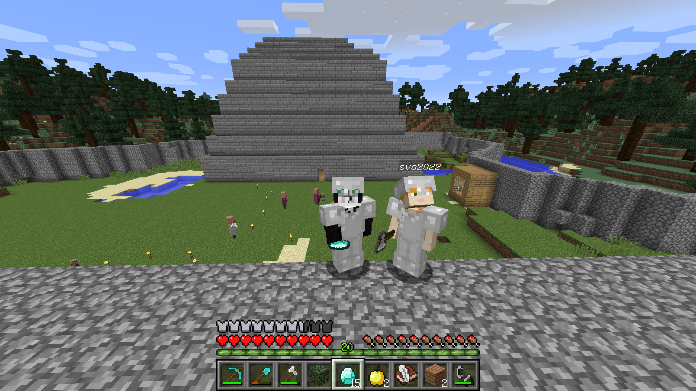
Началась новая эпоха развития. Визоград вошёл в период обновления, строительства и укрепления города.
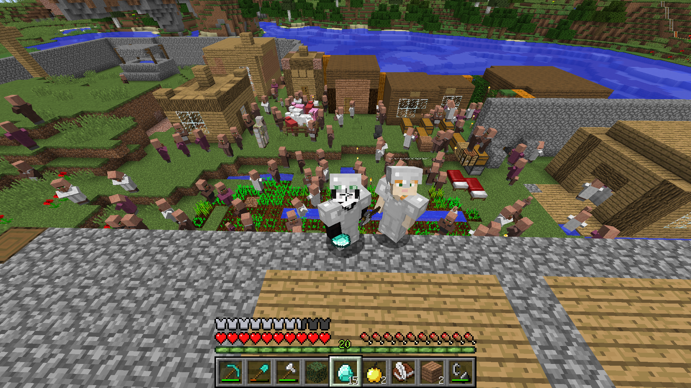
В городе произошло великое освящение и утверждение новой жизни. Это стало важной вехой в истории столицы Алексеевки.
На земли Визограда пришли кочевники, но нападение было успешно отражено. Город выстоял и сохранил свои земли.
Визоград отправился в поход в соседнее государство Незер. Там шли сражения с эфритами, велась добыча ресурсов и подготовка к будущему походу на дракона.
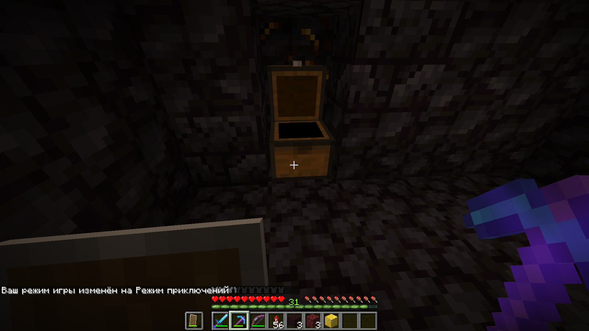
После смены версии дракон был возрождён, а затем успешно побеждён. Это закрепило славу Визограда как сильного государства.
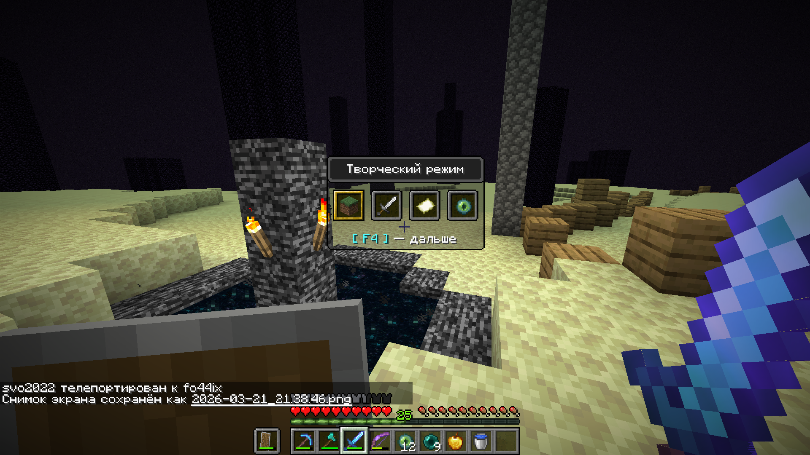
Разбойники напали вместе с собаками, но Визоград отбил рейд. Деревня была спасена, а все жители остались живы.
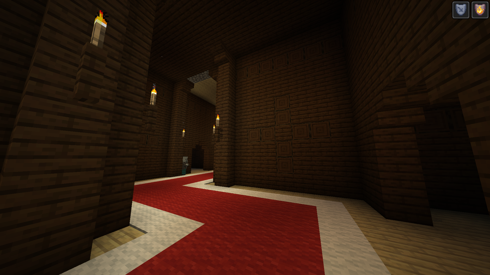

В Визограде начался большой подъём. Появились зоопарки, магазины, военкомат, школа, заводы, каменный завод и нефтеперерабатывающий завод.
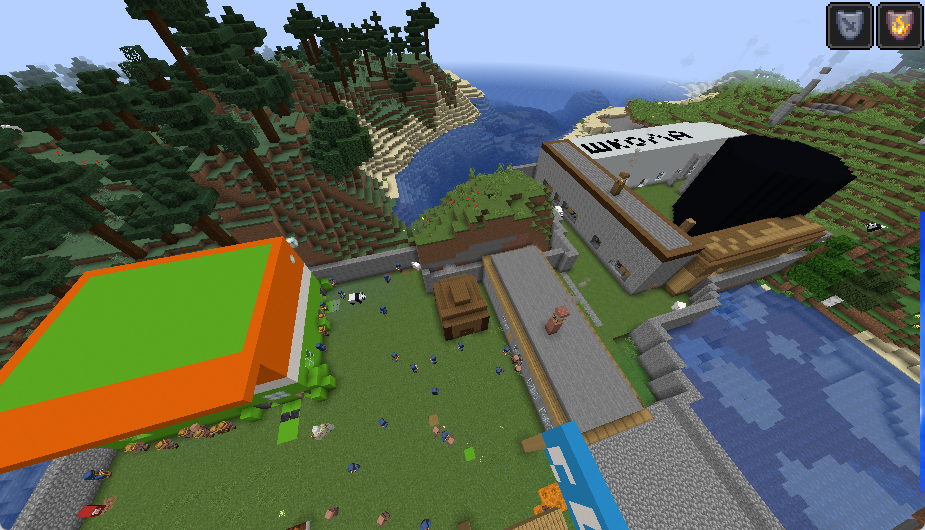
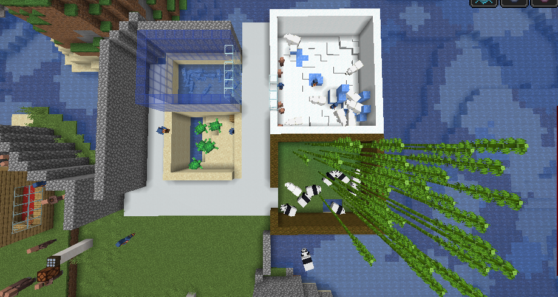
На Визоград обрушилась тяжёлая война. Нападали разбойники, боевые свиньи, разорители, зомби, каварды и криперы. Были разрушения, потери среди жителей и железных големов, но город выстоял.
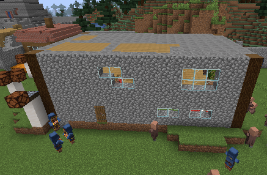
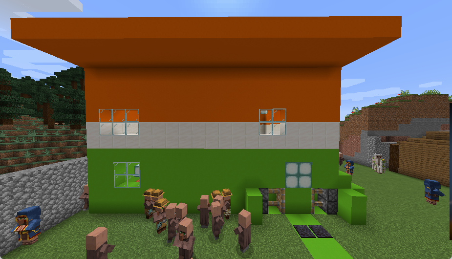
Двое правителей — Марк и Макс — отправились на особняки, которые были сожжены. Затем защитники Визограда вышли на аванпосты и отбили ещё один рейд врагов.
В столице Визограда — Алексеевке — вспыхнул мятеж сторонников разбойников. События переросли в гражданскую войну, были повреждены заводы, пострадали жители и големы, но власть была восстановлена.
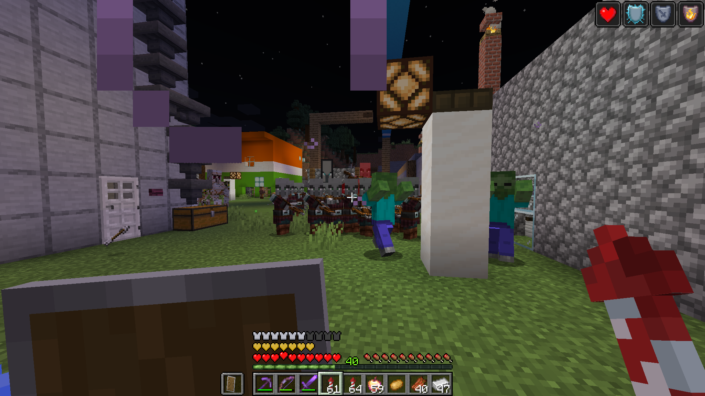
Самая долгая и тяжёлая война в истории государства. Жителей эвакуировали ещё в начале конфликта, а часть людей ушла в лес через подорванные границы. Боевые свиньи, разбойники и заклинатели постоянно атаковали города и окраины, но Визоград удержался благодаря големам и упорной обороне.
Больше всего пострадали два общежития — они были полностью взорваны. Казарма тоже была уничтожена. Замок был захвачен, но затем успешно отбит. Сильно пострадали нефтеобъекты и башни связи, а также кузница, которая была разрушена полностью. Первый каменный завод получил серьёзные повреждения, а магазин «Панда» и жилое здание рядом с заводом — лишь небольшие разрушения.
Торговые ряды, баня, школы, зоопарк, колодцы, церковь, нефтяной завод и военкомат уцелели. Статуя Руслана Холостяка пострадала лишь частично и осталась как напоминание о пережитой войне.
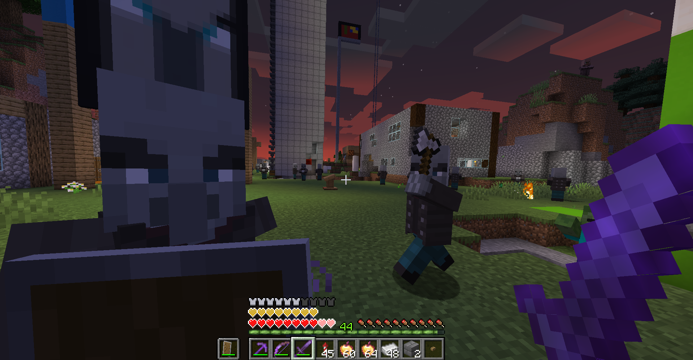
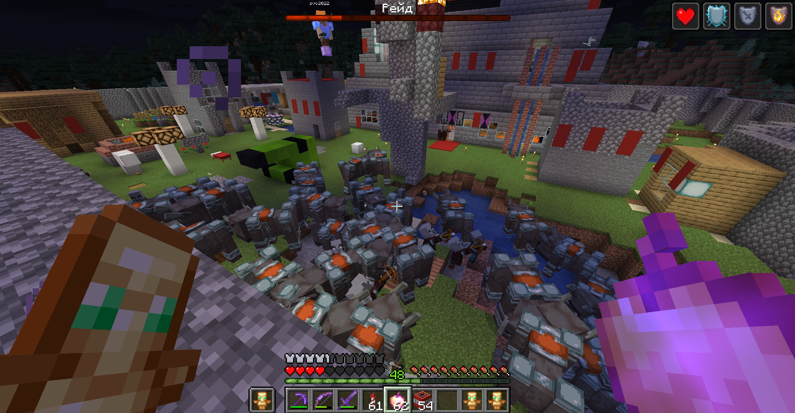
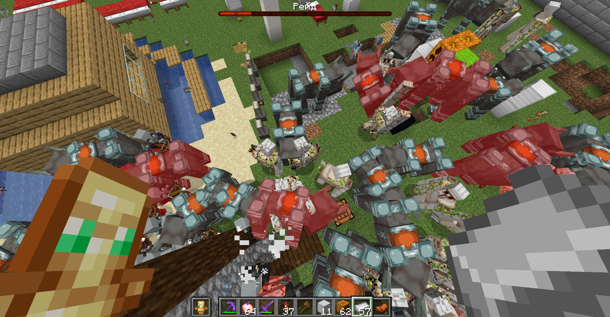
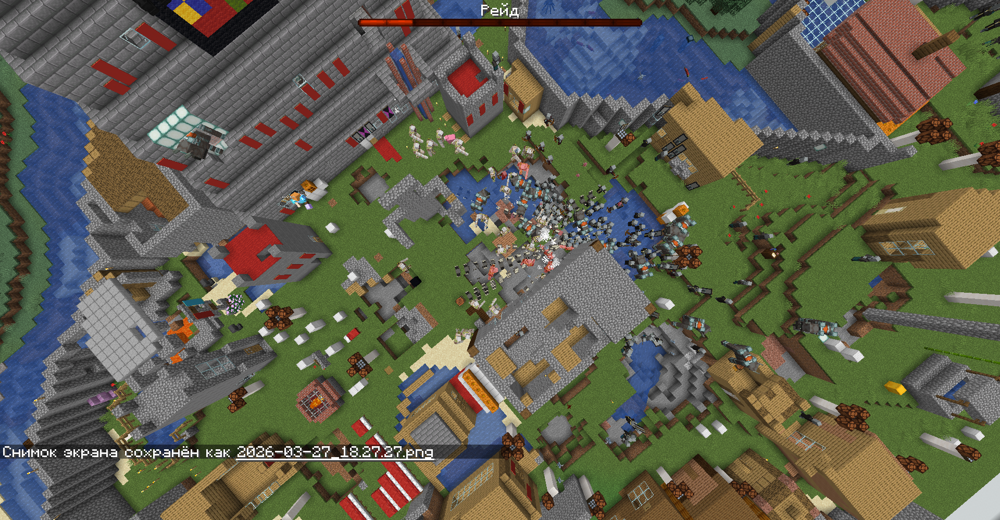